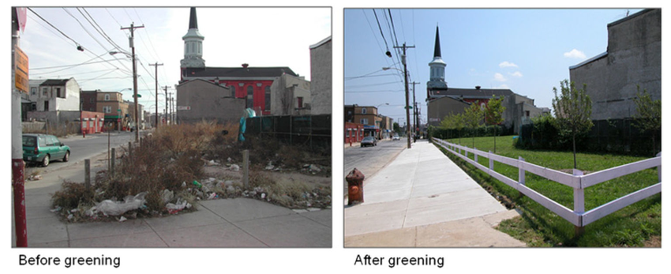
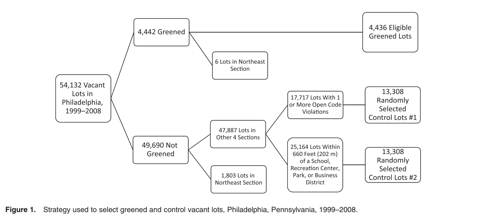
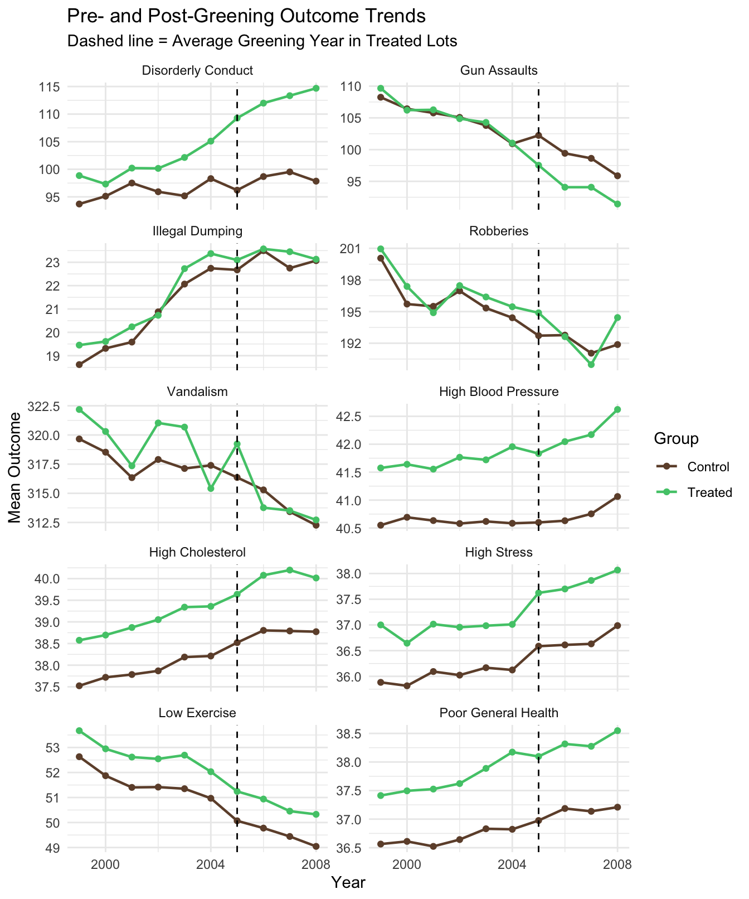
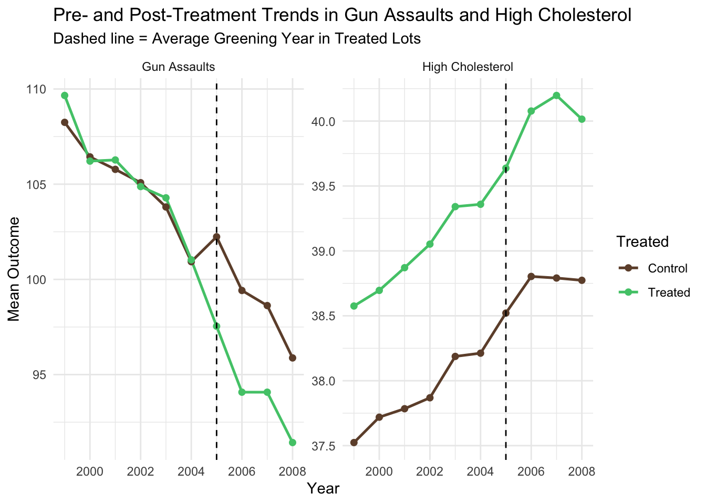
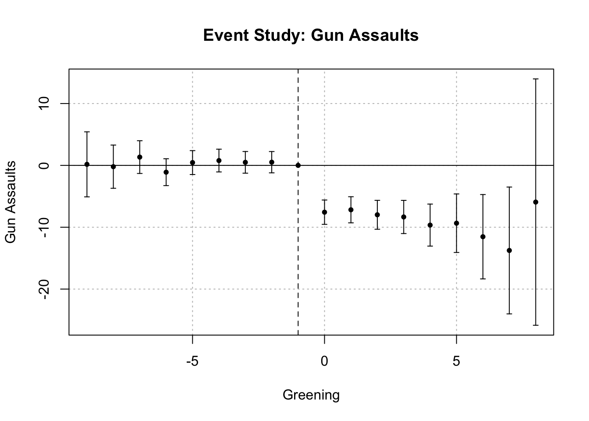
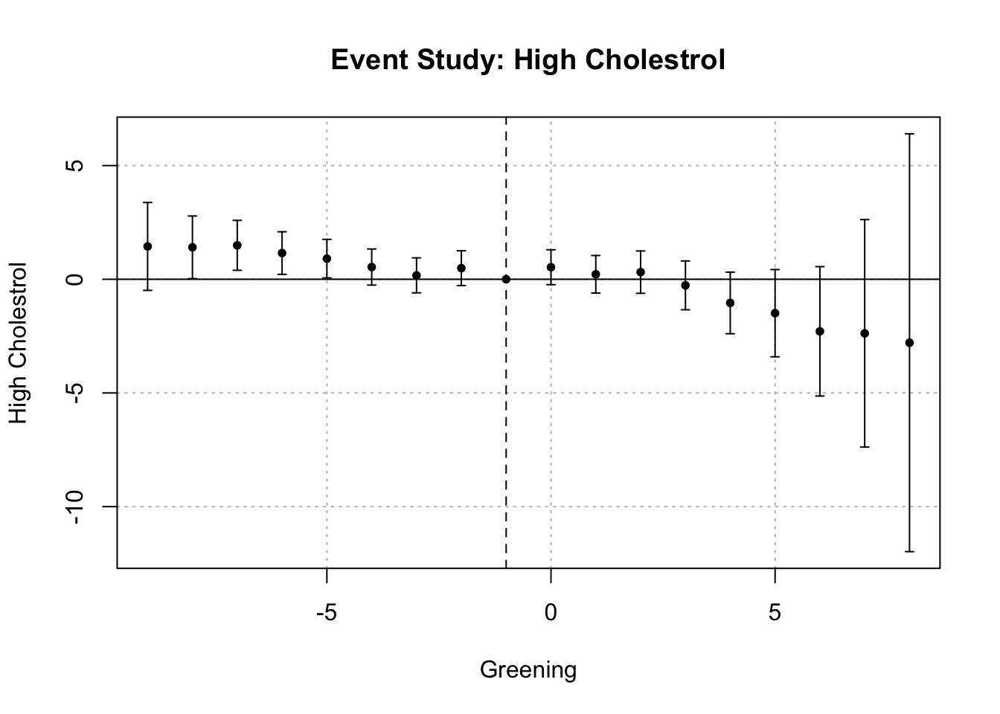

A replication of analysis from A Difference-in-Differences Analysis of Health, Safety, and Greening Vacant Urban Space (Branas et al., 2011)
The Pennsylvania Horticultural Society (PHS) directs a program to clean, green and maintain abandoned lots in Philadelphia, Pennsylvania. The authors of this study conducted a decade-long difference-in-differences analysis of the impact of the PHS vacant lot greening program on health and safety outcomes.
Reference: Greening Vacant Lots to Reduce Violent Crime: A Randomised Controlled Trial - Scientific Figure on ResearchGate.1
In this blog post, we will walk through a replication of the difference-in-differences analysis within the Branas et al.2 study, including looking into the study design and data, running statistical analyses, checking assumptions, and discussing causal inferences made about the benefits of urban greening. This will be done using simulated data, allowing us to focus largely on the study replication rather than data wrangling.
1. Data Description
Key variables and data structure
In this data, each row represents a vacant lot-by-year observation (i.e. L00001 x 2008). The unit of analysis of this study is vacant-lot-by-year.
The treatment variable represented vacant lots greened by the PHS program, during which there was a consistent treatment protocol of removing trash and debris, grading the land, planting grass and trees to create a park-like setting, and installing low wooden posts around each lot’s perimeter to show that this lot was cared for. PHS returned multiple times each year for basic maintenance.
The control variable represented control lots from 2 eligibility pools were randomly selected and matched to treated lots at a 3:1 ratio by city section - vacant lots eligible to serve as controls included only those that had never been greened from 1999 to 2008 but could have been chosen by the PHS for greening. A 3:1 ratio was used because at most 3 control lots per treated lot were available for random selection, without replacement, in all 4 sections of the city.
The outcome variables were various health and safety outcomes. Health outcomes include high stress, high cholesterol, high blood pressure, low exercise, poor health status. Safety outcomes include gun assaults, robberies, disorderly conduct, and illegal dumping.
Overall, the difference-in-differences approach considers these health and safety outcomes occurring on and around vacant lots in the PHS program before and after they were treated, as compared with matched control vacant lots over the same time period.
Notable data cleaning decisions
‘Point-based’ models where crimes (geocoded events) and health outcomes (survey-based) are converted into per-lot measurements using spatial methods (kernel density, inverse-distance weighting) and then modeled in difference-in-differences (DiD) regressions - in our simulated data, these outcomes are stored directly as continuous per-lot-per-year values.
In the study, the health survey was conducted biennially while our simulated data contains annual values for this information.
In terms of selecting the controls, there were initially two groups of randomly selected control lots as seen in Figure 1. The first pool limited eligible vacant lots to only those that had at least 1 open code violation. The second pool limited eligibility to vacant lots that had at least some portion of their area within a 660-foot buffer of a recreation center, K-12 school, park, playground, or commercial corridor. The first pool control group was selected for the study’s final findings as these were a better statistical match to greened lots (in terms of area, age, and unemployment).
The Northeast section was excluded because a trivial number of vacant lots (<0.2%) were greened there.

The pre-greening period for each treated lot was defined as the years prior to the year that the lot was greened/treated (from 1999 to 2008), making a time-varying treatment status variable. This same pre-period was assigned to the 3 randomly selected, matched control lots. The mean pre-treatment period for the vacant lots in the study was 6.18 years.
Sample size, time period, and geographic scope
The study covered 10 years, from 1999–2008. There were 17,744 total lots in this study, where 4,436 were treated and 13,308 were the associated matched controls (a 1:3 ratio).
2. Annotated Replication
Regression Model
Branas et al. studied the effects of greening vacant lots on neighborhood health and safety outcomes in Philadelphia. The authors use a DiD regression framework to compare changes in outcomes over time between treated (greened) and control (not greened) lots. This method is appropriate because the greening intervention occurred at different locations and times rather than through random assignment. By comparing trends before and after treatment across both groups, the DiD approach helps isolate the causal impact of the greening program.
\[Y_{it}=\beta_{0}+\beta_1P_{it}+\beta_2R_{it}+\beta_3(P_{it}\times R_{it})+\beta_{4}(S_{it}\times t)+ \beta_{5}(S_{it}\times M_{i})+\displaystyle\sum_{k=6}^{p}\beta_{k}X_{it}+\xi_{i}+\varepsilon_{it}\]
Where each regression model included different health or safety outcome of interest, \(Yit\). \(it\) is a unit of observation, or lot-by-year combination. The key term here for our difference-in-differences analysis is \(\beta_{3}(P_{it}\times R_{it})\), which captures the additional change in outcomes for treated lots after greening relative to the pre-to-post change in control lots.
Before replicating this model, we need to take a deeper look at our data.
How well is our data matched?
0 = control lots, 1 = treatment lots
Code
# Lot-level average outcome during pre-greening period
sim_data <- sim_data %>%
group_by(lot_id) %>%
mutate(pre_mean = mean(crime_gun_assaults[post == 0])) %>%
mutate(rel_year = year - greening_year) %>%
ungroup()
# Group with lot id to see effect of baseline
baseline_lot <- sim_data %>%
filter(post == 0) %>%
group_by(lot_id) %>%
slice_min(year, n = 1, with_ties = FALSE) %>%
ungroup()
# baseline_lot %>%
# select(treated, area_sqft, median_age, unemployed_sqmi,
# college_sqmi, income_sqmi, black_sqmi, hispanic_sqmi,
# poverty_sqmi,vacant_lot_density) %>%
# tbl_summary(by = treated, statistic = all_continuous() ~ "{mean} ({sd})") %>%
# modify_caption("**Matching Data**") %>%
# modify_header(label ~ "**Variable**") %>%
# modify_spanning_header(c("stat_1", "stat_2") ~ "**Treatment**")
# Select the necessary column for the quick table
baseline_lot %>%
mutate(treated = factor(treated,
levels = c(0, 1),
labels = c("Control", "Treatment"))) %>%
select(treated, area_sqft, median_age, unemployed_sqmi,
college_sqmi, income_sqmi, black_sqmi, hispanic_sqmi,
poverty_sqmi, vacant_lot_density) %>%
tbl_summary(by = treated,
statistic = list(all_continuous() ~ "{mean} ({sd})"),
label = list(area_sqft ~ "Lot Area (sq ft)",
median_age ~ "Median Age",
unemployed_sqmi ~ "Unemployment Density",
college_sqmi ~ "College Education Density",
income_sqmi ~ "Median Household Income",
black_sqmi ~ "Black Population Density",
hispanic_sqmi ~ "Hispanic Population Density",
poverty_sqmi ~ "Poverty Density",
vacant_lot_density ~ "Vacant Lot Density")) %>%
modify_header(label ~ "**Characteristics**") %>%
as_gt() %>%
tab_header(
title = "Baseline Characteristics of Control and Treated Vacant Lots",
subtitle = "Philadelphia Vacant Lot Sample Prior to Greening Intervention") %>%
tab_spanner(label = "Study Groups",
columns = c(stat_1, stat_2)) %>%
tab_source_note(source_note = md(
"Note: Data include Philadelphia vacant lots from 1999–2008."))| Baseline Characteristics of Control and Treated Vacant Lots | ||
| Philadelphia Vacant Lot Sample Prior to Greening Intervention | ||
| Characteristics |
Study Groups
|
|
|---|---|---|
| Control N = 13,3081 |
Treatment N = 4,4361 |
|
| Lot Area (sq ft) | 1,258 (771) | 1,271 (795) |
| Median Age | 36.4 (5.1) | 35.8 (5.1) |
| Unemployment Density | 24 (17) | 25 (19) |
| College Education Density | 111 (79) | 82 (61) |
| Median Household Income | 21,258 (8,015) | 19,422 (7,094) |
| Black Population Density | 579 (466) | 580 (490) |
| Hispanic Population Density | 71 (127) | 78 (142) |
| Poverty Density | 375 (244) | 359 (239) |
| Vacant Lot Density | 1.25 (0.76) | 1.25 (0.77) |
| 1 Mean (SD) | ||
| Note: Data include Philadelphia vacant lots from 1999–2008. | ||
The following table is a baseline lot, and neighborhood characteristics are measured prior to treatment. The study uses Philadelphia vacant lots from 1999–2008, with treated lots greened through the Pennsylvania Horticultural Society program and control lots drawn from eligible untreated vacant lots.
One key assumption of a difference-in-differences analysis is that the treatment and control groups exhibit parallel trends in the pre-treatment period. If this assumption holds, the difference in post-treatment changes between the two groups can be interpreted as the causal effect of the greening intervention on the outcomes of interest.
Let’s take a look at the trends throughout the study period our different outcome variables!
Parallel trends assumption
Code
# Change the data frame into long format
did_long <- sim_data %>%
select(year, treated, greening_year,
crime_gun_assaults, crime_robberies, crime_vandalism,
crime_disorderly, crime_illegal_dumping,
health_high_stress, health_high_chol, health_high_bp,
health_low_exercise, health_poor_health) %>%
pivot_longer(cols = -c(year, treated, greening_year),
names_to = "outcome", values_to = "value")
# Means by year × treated within outcome
did_means <- did_long %>%
group_by(outcome, year, treated) %>%
summarize(mean_value = mean(value, na.rm = TRUE), .groups = "drop")
# Define a reference "treatment year" line (average greening year among treated)
treat_year <- sim_data %>%
filter(treated == 1) %>%
summarize(avg_year = round(mean(greening_year, na.rm = TRUE))) %>%
pull(avg_year)
# Rename the plot & graph
facet_names <- c("crime_disorderly" = "Disorderly Conduct",
"crime_gun_assaults" = "Gun Assaults",
"crime_illegal_dumping" = "Illegal Dumping",
"crime_robberies" = "Robberies",
"crime_vandalism" = "Vandalism",
"health_high_bp" = "High Blood Pressure",
"health_high_chol" = "High Cholesterol",
"health_high_stress" = "High Stress",
"health_low_exercise" = "Low Exercise",
"health_poor_health" = "Poor General Health")
ggplot(did_means, aes(x = year, y = mean_value, color = factor(treated))) +
geom_line(linewidth = 0.8) +
geom_point(size = 1.5) +
geom_vline(xintercept = treat_year, linetype = "dashed") +
scale_color_manual(values = c("0" = "#6F4E37", "1" = "#50C878"),
labels = c("0" = "Control", "1" = "Treated")) +
scale_x_continuous(breaks = c(2000, 2004, 2008)) +
facet_wrap(~outcome, scales = "free_y",
ncol = 2,
labeller = as_labeller(facet_names),
axes = "margins",
axis.labels = "margins") +
labs(color = "Group",
x = "Year",
y = "Mean Outcome",
title = "Pre- and Post-Greening Outcome Trends",
subtitle = "Dashed line = Average Greening Year in Treated Lots") +
theme_minimal()
The figure above presents pre- and post-treatment trends for all outcomes and allows us to assess the parallel trends assumption using approximately five pre-treatment periods (1999–2004). Among safety outcomes, gun assaults appear to best satisfy the parallel trends assumption, as both treated and control groups follow a similar downward trajectory prior to greening, whereas outcomes such as disorderly conduct and vandalism show more divergence or fluctuation between groups before treatment, suggesting potential violations. Among health outcomes, high cholesterol shows relatively parallel pre-treatment trends, with both groups increasing at a similar rate, whereas high stress and low exercise show noticeable differences in trends prior to treatment. Overall, gun assaults and high cholesterol show the most consistent pre-treatment patterns and are therefore the most appropriate outcomes for the DiD analysis.
Selected outcomes for models
Code
# Reshape data into long format so we can plot multiple outcomes using the same structure
did_means <- sim_data %>%
pivot_longer(cols = c(crime_gun_assaults, health_high_chol),
names_to = "outcome",
values_to = "value") %>%
group_by(outcome, year, treated) %>%
summarize(mean_value = mean(value, na.rm = TRUE), .groups = "drop")
# Compute the average outcome by year and treatment status
treat_year <- sim_data %>%
filter(treated == 1) %>%
summarize(avg_year = round(mean(greening_year, na.rm = TRUE))) %>%
pull(avg_year)
# Calculate the average greening year among treated lots
ggplot(did_means, aes(x = year, y = mean_value, color = factor(treated))) +
geom_line(linewidth = 0.9) +
geom_point(size = 1.8) +
geom_vline(xintercept = treat_year, linetype = "dashed") +
facet_wrap(~outcome, scales = "free_y",
labeller = as_labeller(facet_names)) +
scale_color_manual(values = c("0" = "#6F4E37", "1" = "#50C878"),
labels = c("0" = "Control", "1" = "Treated")) +
labs(color = "Treated", x = "Year", y = "Mean Outcome",
title = "Pre- and Post-Treatment Trends in Gun Assaults and High Cholesterol",
subtitle = "Dashed line = Average Greening Year in Treated Lots") +
theme_minimal()
Now that we have visually analyzed the parallel trends assumption for our outcome variables, gun assaults and high cholesterol, let’s run some models!
Regression to estimate treatment effect
Let’s use the {fixest} package to run a model with i(), a syntax for including a period, treatment, and reference in a DiD.
Here, i(rel_year, treated_status, ref = -1) creates an interaction between treatment status and each year relative to greening, producing a separate coefficient for each year. The year before greening (rel_year = -1) is excluded as the reference period.
In addition to the treatment indicators, we include several covariates to control for observable differences across vacant lots and neighborhoods. These include lot characteristics, such as lot area and local vacant lot density, as well as baseline neighborhood characteristics, including unemployment, education, income, racial composition, poverty, and median age. We also include an interaction between section and pre-treatment mean outcomes to account for baseline differences across locations, and section-by-year fixed effects to control for time-varying shocks common within each city section. Standard errors are clustered at the contiguous lot group level to account for spatial correlation.
Let’s do our safety outcome first.
Code
# Create model based on equation
model1 <- feols(
crime_gun_assaults ~ i(rel_year, treated_status, ref = -1) + # B1, B2, B3
section:pre_mean + # B5
area_sqft + vacant_lot_density + # lot covariates
unemployed_sqmi + college_sqmi + # Baseline covariates
income_sqmi + black_sqmi +
hispanic_sqmi + poverty_sqmi + median_age |
section^year, # B4 - dummy variables section x yr
data = sim_data,
cluster = ~ contig_group_id) # cluster ID
iplot(model1, xlab = "Greening",
ylab = "Gun Assaults",
main = "Event Study: Gun Assaults")
The figure above presents the event-study estimates from the DiD model, where each coefficient represents the estimated effect of greening on gun assaults relative to the year immediately before treatment. The pre-treatment coefficients are close to zero and relatively stable, supporting the parallel trends assumption. Following greening, the coefficients become negative and statistically significant, indicating a reduction in gun assaults in treated lots relative to control lots. This pattern suggests that the greening intervention is associated with a decline in gun assaults after implementation.
Next, let’s look at our health outcome.
Code
# Create model based on equation
model2 <- feols(
health_high_chol ~ i(rel_year, treated_status, ref = -1) + # B1, B2, B3
section:pre_mean + # B5
area_sqft + vacant_lot_density + # lot covariates
unemployed_sqmi + college_sqmi + # Baseline covariates
income_sqmi + black_sqmi +
hispanic_sqmi + poverty_sqmi + median_age |
section^year, # B4 - dummy variables section x yr
data = sim_data,
cluster = ~ contig_group_id) # cluster ID
iplot(model2, xlab = "Greening",
ylab = "High Cholestrol",
main = "Event Study: High Cholestrol")
The figure above presents the event-study estimates for high cholesterol from the DiD model, with each coefficient interpreted relative to the pre-treatment period. The pre-treatment coefficients are generally small and stable, providing some support for the parallel trends assumption, although they exhibit slightly more variation than the safety outcome. After treatment, the coefficients do not show a clear or consistent pattern, and most estimates are imprecise, suggesting no strong evidence of a systematic greening effect on high cholesterol.
Code
# Lot-level average outcome during pre-greening period
sim_data <- sim_data %>%
group_by(lot_id) %>%
mutate(pre_mean = mean(crime_gun_assaults[post == 0])) %>%
ungroup() Now, let’s run some models just using an interaction term (post:treated) and look at our key term from the study’s model, \(\beta_{3}(P_{it}\times R_{it})\), as this captures the additional change in outcomes for treated lots after greening relative to the pre-to-post change in control lots. While the previous models were beneficial for testing parallel trends over the years of the study and showing the treatment effect of greening over time, the standard interaction term provides a single, interpretable number to report and compare to the study’s table of results.
# Create model based on equation - selected safety outcome
safety_model <- feols(
crime_gun_assaults ~ post + treated_status + post:treated_status + # B1, B2, B3
section:pre_mean + # B5
area_sqft + vacant_lot_density + # lot covariates
unemployed_sqmi + college_sqmi + # baseline covariates
income_sqmi + black_sqmi +
hispanic_sqmi + poverty_sqmi + median_age |
section^year, # B4- dummy variables section x yr
data = sim_data,
cluster = ~ contig_group_id) # cluster IDCode
# Convert the regression model output into a tidy data frame
tidy(safety_model) %>%
filter(term == "post:treated_status") %>%
gt() %>%
tab_header(title = "DiD Estimate: Gun Assaults") %>%
fmt_number(decimals = 3) %>%
cols_label(term = "Term",
estimate = "Estimate",
std.error = "Std. Error",
statistic = "t-value",
p.value = "p-value")| DiD Estimate: Gun Assaults | ||||
| Term | Estimate | Std. Error | t-value | p-value |
|---|---|---|---|---|
| post:treated_status | −7.661 | 0.800 | −9.574 | 0.000 |
# Create model based on equation- selected health outcome
health_model <- feols(
health_high_chol ~ post + treated_status + post:treated_status + # B1, B2, B3
section:pre_mean + # B5
area_sqft + vacant_lot_density + # lot covariates
unemployed_sqmi + college_sqmi + # baseline covariates
income_sqmi + black_sqmi +
hispanic_sqmi + poverty_sqmi + median_age |
section^year, # B4 - dummy variables section x yr
data = sim_data,
cluster = ~ contig_group_id) # Cluster IDCode
# Keep only the DID interaction term (Post × Treated)
tidy(health_model) %>%
filter(term == "post:treated_status") %>%
gt() %>%
tab_header(title = "DiD Estimate: High Cholesterol") %>%
fmt_number(decimals = 3) %>%
cols_label(term = "Term",
estimate = "Estimate",
std.error = "Std. Error",
statistic = "t-value",
p.value = "p-value")| DiD Estimate: High Cholesterol | ||||
| Term | Estimate | Std. Error | t-value | p-value |
|---|---|---|---|---|
| post:treated_status | 0.061 | 0.349 | 0.174 | 0.862 |
Our model output for the gun assaults outcome (-7.661) was significant, suggesting that after greening, treated lots experienced approximately 7.7 fewer gun assaults per square mile per year compared to control lots relative to the pre-treatment period. This was similar to the study findings for all 4 sections of Philadelphia (-7.90). Our model output for high cholesterol (0.061) was insignificant and lower than the study findings (0.76), possibly due to the limitations of replicating the health survey in the simulated data. The study discussed these outcomes, stating that gun assaults were significantly reduced citywide after the greening treatment and that the consistent increase in high cholesterol related to the greening of vacant lots was surprising and runs counter to prior work.
3. Critical Evaluation
A. Causal Identification
This study presents a partially credible identification strategy, with several important caveats.
The study uses a matched Difference-in-Differences (DID) design comparing treated vacant lots to matched untreated lots over time. Identification relies on both temporal variation (pre vs. post greening) and cross-sectional variation (treated vs. control lots). However, a formal statistical pre-trend test was not conducted, which weakens the empirical support for the parallel trends assumption.
The design is more convincing for crime outcomes than for health outcomes. Crime data come from administrative records measured annually at a fine spatial resolution, which aligns well with the DID framework. In contrast, health outcomes rely on modeled survey aggregates derived from biennial surveys. This creates potential timing misalignment between treatment exposure and outcome measurement and introduces additional measurement noise, weakening causal interpretation.
A key strength is the matching of treated lots to eligible but untreated parcels, which improves comparability and reduces observable selection bias. However, treatment assignment remains quasi-experimental rather than random. Lot selection may still reflect unobserved neighborhood dynamics such as community capacity, redevelopment pressure, baseline safety trends, or political prioritization.
The one-to-one matching design improves internal comparability but also implies that estimates depend heavily on the quality of the matching procedure. If important unobserved differences remain between matched pairs, DID estimates may still reflect residual selection bias rather than purely treatment effects.
Overall Assessment
Overall, the identification strategy is moderately credible for crime outcomes, with strong outcome measurement and spatial timing that aligns well with the treatment. The causal interpretation is less convincing for health outcomes, where measurement limitations, timing misalignment, and potential residual selection bias introduce greater uncertainty.
B. Assumptions
Usually, the assumptions of DID include:
- parallel trends between the treated and control groups
- exogeneity of treatment assignment
- no spillovers (SUTVA)
- correct model specification
They are discussed as follows:
Parallel Trends
The DID framework requires that the treated and control lots follow similar pre-treatment trends.
The paper presents descriptive pre-period comparisons but does not conduct a formal statistical pre-trend test (e.g., an event-study or a joint significance test of pre-treatment coefficients). While crime outcomes appear visually consistent with parallel trends, health outcomes show greater variability and weaker support for this assumption.
A stronger design would test parallel trends within each Philadelphia section and for each outcome, rather than relying primarily on pooled estimates. Without this, the DID estimates risk appearing mechanically generated rather than empirically validated (i.e., estimates appear without clear evidence of identifying variation).
Assessment: Parallel trends appear plausible for crime outcomes but are insufficiently demonstrated overall, particularly for health outcomes where pre-trend evidence is weak.
Exogeneity of Treatment Assignment
Treatment assignment must be independent of potential outcomes conditional on controls. The authors attempt to address this through matching and timing tests, but the greening program was implemented through a real policy process rather than random allocation. The matching procedure is not fully transparent, and the quality of balance on unobservables remains unclear.
Potential sources of endogeneity example:
- involvement of the community in lot improvement varies
- neighborhoods are already improving or worsening trajectories for other social or policy reasons
- redevelopment or gentrification pressure
- policing efforts or administrative selection processes
- areas with stronger maintenance capacity
These mechanisms could violate exogeneity if treated lots were systematically located in areas already experiencing improvement.
Assessment: Exogeneity is partially addressed but not clearly established. Residual selection bias due to endogenous program placement remains a credible concern.
Spillover / SUTVA
SUTVA requires that the treatment of one unit does not affect the outcomes of others.
Spillovers are plausible because greening may change neighborhood visibility, informal surveillance, pedestrian activity, or crime displacement. The paper argues that spillovers are limited because the treated and control lots were, on average, 1.63 miles apart.
However, this argument primarily addresses contamination of the control group. There are many possible ways that could hypothetically create spillovers:
- Spatial displacement of crime (interference across units): If greening reduces crime locally but shifts it to nearby untreated areas, estimated effects may reflect redistribution rather than net crime reduction.
- Localized treatment externalities (positive neighborhood spillovers): Improvements in one lot may increase perceived safety or collective efficacy in nearby blocks, meaning untreated units may partially receive treatment exposure.
Assessment: Spillovers are likely limited for identification but not formally tested.
Model Specification
Correct specification requires appropriate spatial scale and controls.
A key concern is spatial scale. Treatment effects, particularly on health outcomes, likely operate at very local distances (e.g., 100-500 meters) through mechanisms such as walking exposure, stress reduction, or perceived safety. Aggregating outcomes to the census tract level may dilute these effects and bias estimates toward zero due to spatial exposure misclassification.
This concern is consistent with spatial causal designs in the related literature (for example, distance-gradient designs such as Stokes’ wind turbine studies), where treatment intensity is modeled as a function of distance rather than as a binary exposure.
Relatedly, small-scale spatial behavioral mechanisms suggest health responses may occur primarily within walking distance of treated lots. If exposure is defined only at the tract level, this may misclassify true treatment exposure and attenuate estimated effects.
Regional heterogeneity across Philadelphia sections further suggests that a single average treatment effect on the treated (ATT) may mask meaningful variation in treatment effects across neighborhoods.
Assessment: Model specification is reasonable but likely too spatially coarse, potentially attenuating treatment estimates and masking meaningful spatial heterogeneity.
C. Other Limitations
Measurement Validity
The primary limitation concerns the quality of health outcome measurement. Health indicators are derived from a biennial telephone survey (~5,000 respondents per wave, 30.7% response rate) using repeated cross-sections rather than longitudinal individuals. Outcomes are further constructed using tract-level small-area estimation and interpolation across survey years. These features introduce potential nonresponse bias, substantial measurement noise, post-processing distortion, and temporal misalignment between treatment exposure and outcome observation, all of which likely attenuate estimated treatment effects. In contrast, crime outcomes are based on administrative records with higher spatial and temporal precision, making them substantially more reliable.
Assessment: Health results should be interpreted cautiously due to measurement error and limited statistical precision.
External Validity
Philadelphia represents a legacy city characterized by extensive vacancy from deindustrialization, concentrated poverty, parcel-scale abandonment, and an established low-cost greening intervention. This makes the study particularly informative for cities with similar urban vacancy dynamics (e.g., Detroit, Baltimore, Cleveland). The intervention also aligns with Jane Jacobs’ theory of “eyes on the street,” in which improvements to the physical environment can increase informal surveillance and neighborhood activity, providing a plausible behavioral mechanism for crime reduction. However, results may not generalize to cities with lower vacancy rates, suburban environments, different urban morphology, or interventions involving large-scale parks rather than parcel-level greening.
Assessment: External validity is strong within legacy-city contexts but limited outside them.
Interpretation of Effect Strength
Based on the simulated replication results, several health estimates have confidence intervals that cross zero, indicating limited statistical precision rather than definitive null effects. While the original paper does not formally test this uncertainty, the replication suggests the study may be underpowered to detect modest health impacts, given the noisier measurement structure of the health data.
Crime findings are also not uniformly consistent across categories. While gun assaults show the most robust reductions, other crime categories show weaker or mixed patterns, suggesting the intervention may shift neighborhood activity patterns rather than uniformly reduce all forms of disorder.
Assessment: Evidence is strongest for gun violence reduction, weaker and more uncertain for health outcomes.
Survey Response and Timing
Health data are collected only every two years, which may smooth or delay detection of treatment effects. The relatively low response rate also raises concerns about representativeness, despite the use of weighting and tract-level estimation techniques. Because the paper provides limited detail on how these adjustments address potential bias, uncertainty remains regarding the precision of health estimates.
Assessment: Survey structure and construction likely reduce statistical power and lead to imprecise estimates of health effects.
D. Future Research Directions
Several improvements could strengthen causal inference and improve measurement precision.
Measurement Improvements
Future studies could leverage advances in health and behavioral measurement technologies that were not widely available during the study period (1999–2008). These include wearable activity trackers, mobility and GPS exposure data, direct biometric measurements (e.g., blood pressure monitoring), and passive sensing technologies. These approaches could reduce reliance on self-reported outcomes and improve statistical power by reducing measurement error.
Causal Design Improvements
Future research could also strengthen identification by using more spatially precise exposure definitions, such as distance-based treatment intensity measures rather than binary tract-level exposure indicators. Related spatial causal designs (e.g., distance-gradient approaches such as the Stokes windfarm study) suggest this may better capture localized treatment effects. Additional improvements include formal event-study designs to test for parallel trends, heterogeneous treatment-effect analysis across neighborhood characteristics, and explicit testing of spillover radii to distinguish local effects from neighborhood diffusion.
Conceptual Improvements
Future work should explicitly test whether health responses operate at small-neighborhood scales, since behavioral responses to greening interventions likely occur within short walking distances rather than administrative boundaries. Understanding the spatial scale of response is critical for correctly specifying treatment exposure.
Overall Conclusion
Overall, the study provides reasonably strong causal evidence that vacant lot greening reduces gun violence, supported by a credible DID framework and relatively high-quality administrative crime data. In contrast, evidence for health improvements remains suggestive rather than definitive, largely due to noisier survey-based measurement, limited statistical precision, and potential spatial misalignment between treatment exposure and outcome measurement.
Taken together, the results suggest that greening interventions may produce meaningful public safety benefits, while the evidence for health impacts should be interpreted as preliminary. Future research incorporating more precise health measurement, spatially refined exposure definitions, and stronger causal validation tests would help clarify whether the weaker health findings reflect truly modest effects or limitations of the empirical design.
Footnotes
Citation
BibTeX citation:
@online{robillard2026,
author = {Robillard, Ava},
title = {Does {Urban} {Greening} {Reduce} {Crime} and {Promote}
{Health?}},
date = {2026-03-06},
url = {https://avarobillard.github.io/posts/2026-03-06-eds241},
langid = {en}
}
For attribution, please cite this work as:
Robillard, Ava. 2026. “Does Urban Greening Reduce Crime and
Promote Health?” March 6, 2026. https://avarobillard.github.io/posts/2026-03-06-eds241.